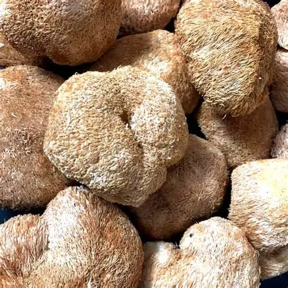
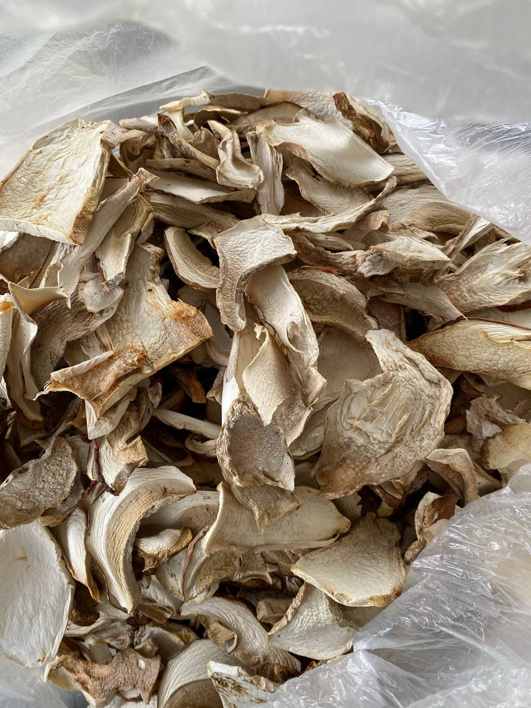
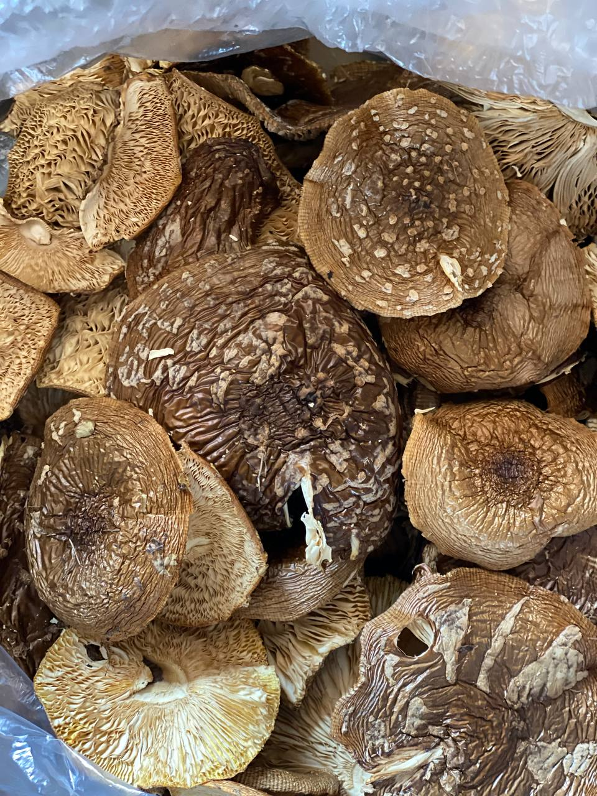
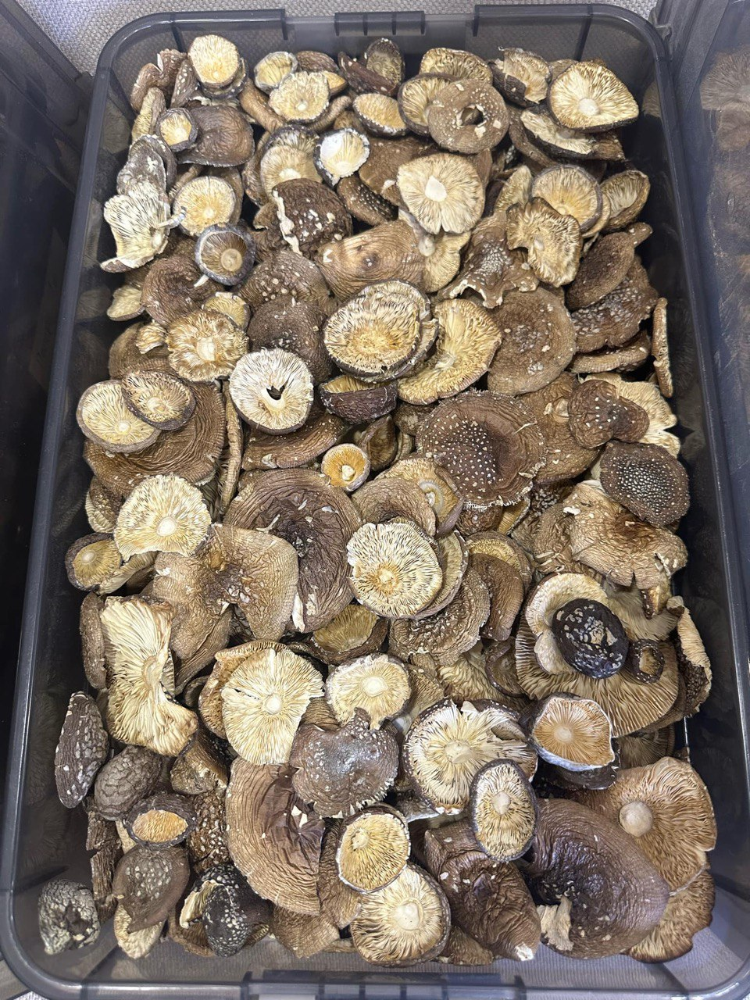
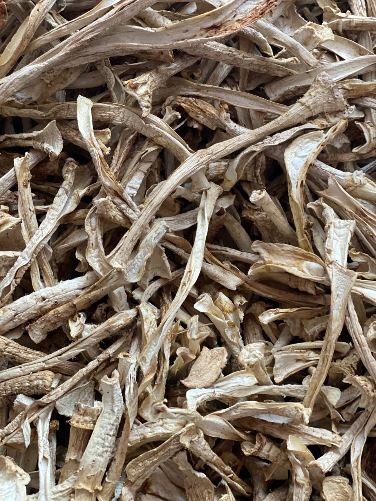

Medicinal Use of Amanita Mushrooms
The use of the Amanita muscaria (fly agaric) in official medicine is quite limited, primarily due to the challenges of removing toxic alkaloids. For example, a protein-based toxin extracted from the mushroom has been found to dissolve red blood cells. Boiling for 40 minutes destroys the poison, but this also reduces the activity of other alkaloids. Of particular interest for experimental purposes is a specific pigment found in the mushroom, which exhibits strong anti-tumor activity. In contrast to scientific medicine, folk healers are much more willing to use fly agaric in their practices, mostly for external use. Only a few dare to recommend preparations from this toxic mushroom for internal use. Externally, fly agaric preparations are used for rubbing on joints affected by rheumatic pain, osteochondrosis, and similar conditions. The use of fly agaric tincture internally has been practiced in the treatment of various internal tumors, nervous system disorders, and a range of other conditions. Homeopaths are among those who most readily utilize the medicinal properties of the fly agaric, preparing a remedy known as Agaricus muscarius. For the tincture, both the root and the cap are used, after being thoroughly cleaned of the poisonous skin. This homeopathic remedy is prescribed for psychosomatic disorders, neurological and mental illnesses (such as epilepsy, muscle spasms, intestinal and bladder cramps, nervous overexcitement), and also for treating skin rashes associated with internal organ diseases.
Product list
-
 Lions Mane Mushroom (Hericium erinaceus) is a medicinal mushroom known for its unique appearance and valuable health benefits. Benefits: Supports nervous system regeneration Enhances memory and concentration Has anti-inflammatory and antioxidant properties Boosts immunity and gut health Widely used in traditional and functional medicine as a natural supplement for cognitive support..
Lions Mane Mushroom
$5 per 100 grams
-
 Our premium-quality dried porcini mushrooms (Boletus edulis) are hand-picked in the clean Carpathian forests. With their rich aroma and deep, earthy flavor, they are perfect for soups, risottos, sauces, and gourmet dishes. A small amount adds a bold mushroom taste and an irresistible scent to any meal. 100% natural, no additives Carefully dried to preserve flavor and nutrients Price: $10 per 100 grams Product of Ukraine Storage: Store in a cool, dry place away from direct sunlight.
Porcini mushroom
$10 per 100 grams
-

Dried Amanita muscaria, also known as the red fly agaric, has a long history of use in traditional and folk medicine. When used in controlled amounts and under professional supervision, it may be prepared into tinctures, balms, or extracts for various purposes. Traditional applications have included support for: nervous system balance, anxiety, and insomnia; chronic pain, neuralgia, and osteochondrosis; inflammation-related conditions; ⚠️ Warning: Amanita muscaria is considered a conditionally toxic mushroom. Use only after consulting a healthcare provider or herbal medicine specialist. Do not consume raw.
Amanita muscaria
$15 per 100 grams
-
 The Royal Fly Agaric is a rare mushroom, closely related to the red fly agaric (Amanita muscaria), but known for its milder properties. In folk and traditional medicine, it has been used to create tinctures, extracts, and topical remedies. Historically, Amanita regalis has been used to support: nervous system balance, stress relief, and emotional calm; joint and muscle discomfort; better sleep⚠️ Warning: Amanita regalis is a conditionally toxic mushroom. Use only under the guidance of a knowledgeable healthcare or herbal medicine professional. Do not consume raw.
Amanita regalis
$25 per 100 grams
-
 The Panther Cap is one of the most potent species in the Amanita genus. Its effects are significantly stronger than those of Amanita muscaria or Amanita regalis, making it a mushroom traditionally used with great caution.Traditional use of Amanita pantherina includes: deep nervous system relaxation; relief from mental tension and anxiety; alleviation of chronic pain and migraines; support for sleep and recovery from stress. ⚠️ Warning: Amanita pantherina is a highly toxic mushroom. It must only be used in very small amounts and under professional guidance. Not for casual consumption or culinary use.
Amanita pantherina
$50 per 100 grams
-
 The stems of the Panther Cap mushroom contain lower concentrations of active compounds than the caps, making them suitable for gentler or external applications — such as salves, infusions for topical use, or calming baths. They are considered a milder source of muscimol and other neuroactive compounds, and are sometimes used for microdosing under strict dosing control. ⚠️ Warning: Amanita pantherina remains a toxic mushroom, even in its stems. For external or guided use only. Do not ingest.
Dried Panther Cap Stems
$7 per 100 grams